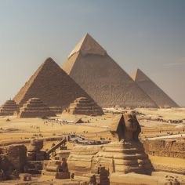

อารยธรรมอียิปต์โบราณ

ความเป็นมา
อียิปต์โบราณเกิดขึ้นบริเวณลุ่มแม่น้ำไนล์ แม่น้ำสายสำคัญที่ช่วยให้ผู้คนสามารถทำเกษตรกรรม และสร้างชุมชนขนาดใหญ่ขึ้นได้
ความสำคัญ
ชาวอียิปต์มีความรู้ด้านการแพทย์ คณิตศาสตร์ ดาราศาสตร์ และการก่อสร้าง จึงเกิดสิ่งก่อสร้างขนาดใหญ่ เช่น พีระมิดและวิหารต่าง ๆ